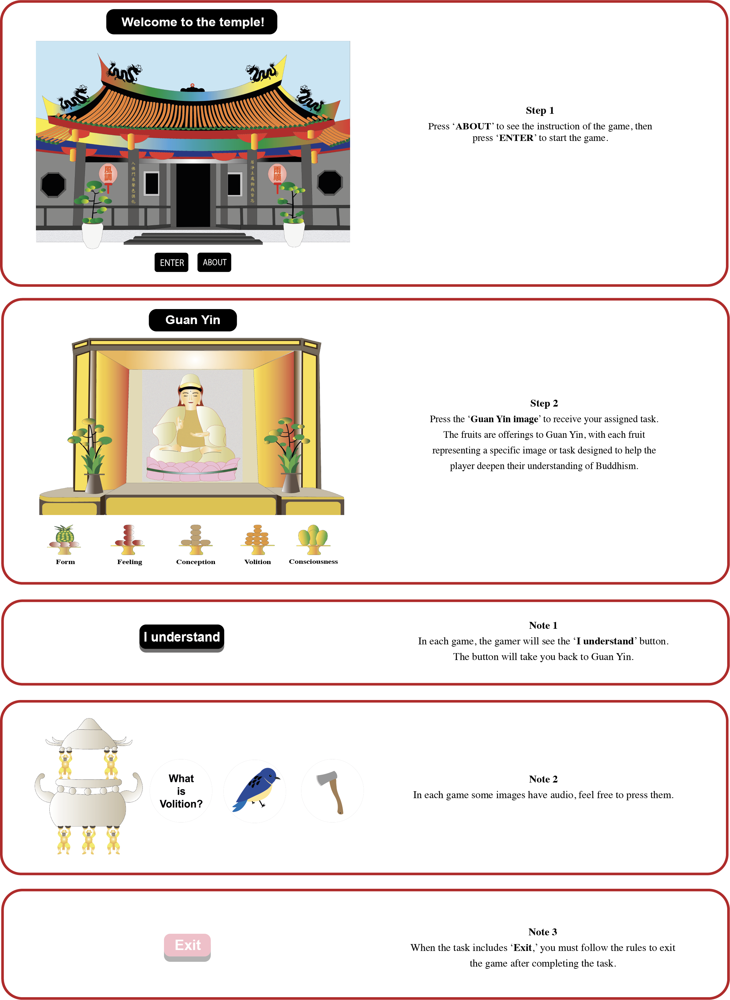

This installation aims to integrate traditional Buddhist techniques into game design. In doing so examining religious practices as forms of communication and expressions of digital spirituality. Through this game, I intend to embody the essence of Buddhist teachings and invite the audience to experience the unique culture of Taiwanese temples.
The goal of the game is to reach Nirvana by understanding that form, feeling, perception, volition, and consciousness are all empty. This realization enables us to transcend suffering. While suffering is a part of every life, Nirvana—the end of suffering—is attainable for all.
